5 Stetige Regler
Bisher haben wir die Charakterisierung der Regelstrecke (RS) behandelt. Nun betrachten wir den vollständigen Regelkreis und befassen uns mit dem Regler (RE) bzw. dem Regelverhalten. Damit wir uns ab dem nächsten Unterrichtsblock mit den Schritten 3 (Anforderungen) und 4 (Reglerentwurf) des Regelungstechnik-Workflows (vgl. Abb. 2.1) befassen können, erarbeiten wir hier die Grundlagen.
- Du kannst die fünf Anforderungen an eine Regelung auswendig aufzählen.
- Du kannst den Regelkreis in Boris für einen gegebenen Regler bzw. eine gegebene Regelstrecke aufbauen und die Führungssprungantwort (oder alternativ eine Störsprungantwort) simulieren.
- Du kennst den P-Regler und dessen Vor- und Nachteile.
- Du kennst den I-Regler bzw. den PI-Regler und kannst den Einfluss des I-Anteils im Regler erklären.
- Du kennst den PID- bzw. PD-Regler und kannst den Einfluss des D-Anteils im Regler erklären.
5.1 Regelverhalten
In den bisherigen Unterrichtsblöcken haben wir primär die Regelstrecke (RS) betrachtet. Nun wenden wir uns dem Regelkreis zu. Wir modifizieren den Standardregelkreis (vgl. Abb. 1.15) etwas, um neben der Führungsgrösse auch optional Störgrössen simulieren zu können (z_1 greift dabei vor und z_2 nach der Regelstrecke ein).
Zur Erinnerung: Im Standardregelkreis sind das Stell- und das Messglied in der Regelstrecke integriert, d. h. es verbleiben nur die beiden Blöcke Regler (RE) und Regelstrecke (RS).
Bevor wir uns mit dem Regelverhalten auseinandersetzen, wollen wir uns noch einmal die Aufgabe einer Regelung vor Augen führen, die wir in Abschnitt 1 besprochen haben.
Bestimmte zeitveränderliche Grössen technischer (oder auch andersartiger) Prozesse sollen auf gewünschte Werte gebracht und dort gehalten werden bzw. einem vorgegebenen Verlauf folgen.
Stimmen Führungsgrösse (Sollwert) w und Regelgrösse (Istwert) x nicht überein, so tritt eine Regeldifferenz e auf. Der Regler hat nun die Aufgabe, aus dieser Regeldifferenz eine Stellgrösse y zu erzeugen, die dafür sorgt, dass Soll- und Istwert näher zusammen kommen bzw. letztlich möglichst übereinstimmen.
5.1.1 Führungs- bzw. Störverhalten
Wir kennen mittlerweile die Sprungantwort als Werkzeug zur Charakterisierung eines Übertragungsgliedes. Die Sprungantwort eignet sich auch, um den gesamten Regelkreis bzw. das Verhalten der Regelung zu beurteilen. Wollen wir die Reaktion auf einen Führungssprung (Sollwertsprung) untersuchen - wir sprechen dann vom Führungsverhalten - nennen wir die Sprungantwort Führungssprungantwort1. Damit kann beurteilt werden, wie rasch und in welcher Weise die Regelgrösse (Istwert) die Führungsgrösse (Sollwert) erreicht und ob es eine bleibende Regelabweichung (bleibende Differenz zwischen Soll- und Istwert) gibt.
Um die Reaktion auf eine Störgrösse, also das Störverhalten zu untersuchen, simulieren wir einen Störsprung2 (z. B. Sprung am Eingang z_1 oder z_2 in Abb. 5.1) und sprechen dann von der Störsprungantwort3.
5.2 Anforderungen
Als Erstes müssen wir uns mit den wichtigsten Anforderungen an eine Regelung befassen. Eine gute Regelung erfüllt im Allgemeinen die folgenden fünf Anforderungen:
- Genauigkeit
- Die Regelgrösse (Istwert) soll im stationären Zustand exakt mit der Führungsgrösse (Sollwert) übereinstimmen.
- Schnelligkeit
- Die Regelgrösse (Istwert) soll nach einer Führungsgrössenänderung (Sollwertänderung) oder nach dem Auftreten einer Störung in kurzer Zeit einen neuen stationären Zustand einnehmen.
- Dämpfung
- Der neue stationäre Zustand (nach einer Führungsgrössenänderung oder Störung) soll ohne allzu grosses Überschwingen erreicht werden.
- Stabilität
- Die Regelgrösse (Istwert) darf nach einer Störung oder einer Änderung der Führungsgrösse (Sollwertänderung) nicht unkontrolliert reagieren, d. h. nicht in eine Dauerschwingung oder aufklingende Schwingung geraten.
- Robustheit
- Die Regelung soll auch entfernt vom regulären Arbeitspunkt bzw. bei Veränderungen der Regelstrecke (z. B. bei Verschleisserscheinungen/Abnützungen/Temperaturänderungen) zufriedenstellend funktionieren.
Im folgenden Diagramm können typische Führungssprungantworten ein-/ausgeblendet werden, um die oben genannten Anforderungen intuitiv zu verstehen.
Überlege dir für jeden Legendeneintrag, wie die entsprechende Führungssprungantwort typischerweise aussehen könnte und klicke anschliessend auf den Legendeneintrag, um die Kurve einzublenden.
5.3 Regler
Mit den oben aufgeführten Anforderungen (vgl. Abschn. 5.2) im Hinterkopf betrachten wir nun die nachfolgend aufgelisteten Regler und versuchen jeweils ihre Vor- und Nachteile herauszuarbeiten. Es geht primär um das qualitative Verhalten der Regelung. Wie man die Regler einstellt/parametriert, werden wir uns in einem zukünftigen Unterrichtsblock anschauen.
Wir nennen die oben genannten Regler auch stetige Regler, da sie eine stetige4 (kontinuierliche) Stellgrösse erzeugen.
Der Regler hat die Aufgabe aus der Regeldifferenz e in möglichst intelligenter Weise eine Stellgrösse y zu erzeugen. Der Zusammenhang zwischen Stellgrösse und Regeldifferenz kann wiederum mathematisch (Reglergleichung) oder grafisch (Sprungantwort) dargestellt werden.
Anmerkung: In Realität kann die Stellgrösse nicht beliebige Werte annehmen, da immer irgendwo Begrenzungen/Anschläge vorhanden sind. Wir ignorieren dies im Moment und gehen im nächsten Unterrichtsblock darauf ein.
Als beispielhafte Regelstrecke für die nachfolgenden Simulationen dient uns eine P-T3-Strecke mit K_P=10, T_1=3\,\mathrm{s}, T_2=0.5\,\mathrm{s} sowie T_3=0.1\,\mathrm{s}.
5.3.1 P-Regler (Proportional-Regler)
Der einfachste aller Regler ist der P-Regler, da es sich dabei um das bekannte P-Glied handelt. Wie wir wissen, wird ein P-Glied mit einem einzigen Parameter, dem Proportionalbeiwert K_P beschrieben (in diesem Kontext häufig als Reglerverstärkung oder einfach Verstärkung bezeichnet).
y(t) = K_P \cdot e(t)
Der Proportionalbeiwert des Reglers (Reglerverstärkung) darf nicht mit dem Proportionalbeiwert der Strecke (Streckenverstärkung) verwechselt werden. Beide werden i. Allg. mit K_P bezeichnet. Falls Verwechslungsgefahr herrscht, wird zur Unterscheidung K_{PR} für den Regler sowie K_{PS} für die Strecke verwendet.
Wir beginnen mit einer Reglerverstärkung von K_P=0.5 und betrachten nachfolgend die Führungssprungantwort.
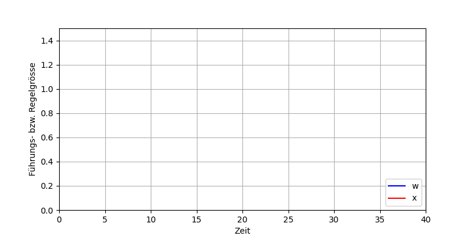
Das anfängliche Verhalten scheint sehr gut zu sein, doch im stationären Zustand bleibt eine deutliche Regeldifferenz bestehen. Warum sich eine bleibende Regelabweichung einstellt, können wir in der folgenden Animation sehr schön sehen. Die Animation zeigt das Regelverhalten in Zeitlupentempo und man sieht schön, wie sich der stationäre Zustand allmählich einstellt. Der Sollwert kann nicht erreicht werden, da sonst die Regeldifferenz und damit die Stellgrösse null werden würden, was wiederum eine Ausgangsgrösse von null ergeben würde. Es stellt sich also ein entsprechendes Gleichgewicht5 ein.
Um zu untersuchen, ob eine höhere Verstärkung die Situation verbessert, erhöhen wir die Verstärkung auf K_P=1.0.
Wir stellen fest, dass durch die Erhöhung der Verstärkung die bleibende Regelabweichung abnimmt, die Schwingneigung allerdings zunimmt. Die Regelung ist also schlechter gedämpft. Dies ist ein generelles Problem in der Regelungstechnik und begrenzt die maximal mögliche Verstärkung.
Nachfolgend ist die Führungssprungantwort für eine Verstärkung K_P=3.0 dargestellt und man kann sich gut vorstellen, dass eine weitere Erhöhung der Verstärkung allmählich zu einer Dauerschwingung bzw. schliesslich zu instabilem Verhalten führt.
Als Fazit können wir festhalten, dass der P-Regler ein rasches Erreichen des stationären Zustandes ermöglicht, allerdings verbleibt an einer P-Strecke immer eine bleibende Regelabweichung. Diese kann durch die Erhöhung der Verstärkung zwar verringert werden, allerdings führt dies zu einer Verschlechterung der Dämpfung.
Es scheint so, als wäre der P-Regler aus den oben genannten Gründen praktisch unbrauchbar bzw. nur für sehr primitive Regelungen brauchbar. Wir werden später aber sehen, dass der P-Regler an I-Strecken zu sehr gutem Verhalten führen kann.
Störsprungantwort
Um den Einfluss von Störungen zu untersuchen, simulieren wir entsprechende Störsprungantworten. Wir setzen dabei w=0 und leiten ein Sprungsignal am Störeingang z_1 oder z_2 ein. Die Störsprungantwort zeigt uns, welchen Einfluss eine Störung auf das Regelverhalten hat. Im Idealfall geht die Störsprungantwort möglichst rasch gegen 0 (was bedeutet, dass die Störung vollständig ausgeregelt wird).
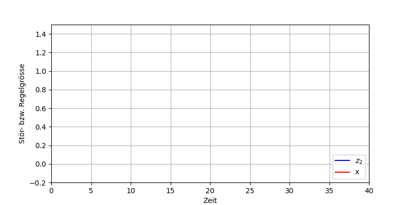
Wir stellen fest, dass der P-Regler die Störung z_2 nicht vollständig ausregeln kann und es auch hier (nicht überraschend) zu einer bleibenden Regeldifferenz kommt. Wir verzichten hier auf die Störgrösse z_1, da qualitativ dasselbe Verhalten resultiert (der Einfluss von z_1 ist allerdings deutlich grösser, da sie noch von der Strecke verstärkt wird).
Führungsrampenantwort
Abschliessend wollen wir wieder die Führungsgrösse vorgeben, aber diesmal rampenförmig hochfahren (wir sprechen von einer Führungsrampe). Damit können wir das Führungsverhalten einer Folgeregelung beurteilen. Als Beispiel einer Folgeregelung kann man sich z. B. eine Drehzahl- bzw. Geschwindigkeitsregelung eines Elektromotors vorstellen, bei der ein bestimmtes Geschwindigkeitsprofil abgefahren werden soll. Dabei wird der Sollwert (gemäss Geschwindigkeitsprofil) i. Allg. dauernd verändert.
Wir stellen fest, dass die Regeldifferenz beim rampenförmigen Sollwertverlauf sogar immer grösser wird, d. h. ein P-Regler wäre für eine Folgeregelung an einer P-Strecke ungeeignet.
Das Grundproblem des P-Reglers ist, dass nur eine Stellgrösse erzeugt wird, wenn die Regeldifferenz ungleich 0 ist. Das bedeutet, dass der Sollwert nie ganz erreicht werden kann. Um die Situation zu verbessern, bräuchten wir einen Regler, der eine Ausgangsgrösse erzeugt, wenn der Eingang gleich 0 ist bzw. bei einer konstanten Eingangsgrösse eine ansteigende Ausgangsgrösse erzeugt. Fällt dir ein Übertragungsglied ein, dass diese Eigenschaften aufweist?
5.3.2 I-Regler (Integral-Regler)
Im Gegensatz zum P-Glied kann ein I-Glied auch einen Wert ausgegeben, wenn der Eingang gleich 0 ist. Das I-Glied integriert das Eingangssignal, d. h. wenn 0 am Eingang anliegt, ändert sich das Integral nicht mehr und der Wert des Integrals (Ausgangsgrösse) bleibt konstant. Bei einer konstanten Eingangsgrösse nimmt die Ausgangsgrösse stetig zu, wie wir das von der Sprungantwort des I-Gliedes kennen.
Verwenden wir das I-Glied als Regler, so sprechen wir vom I-Regler. Beschrieben wir dieser mit dem bekannten Integrierbeiwert K_I, den wir wiederum auch als Reglerverstärkung oder einfach Verstärkung bezeichnen.
y(t) = K_I \cdot \int e(t) \, \mathrm{d}t
Wir sehen, dass der I-Regler tatsächlich zu keiner bleibenden Abweichung führt, d. h. eine genaue Regelung ermöglicht. Leider dauert es sehr lange bis der Sollwert erreicht wird, d. h. wir versuchen die Schnelligkeit durch die Verdopplung der Verstärkung zu verbessern.
Die Schnelligkeit konnte durch eine grössere Verstärkung tatsächlich erhöht werden, es dauert jedoch immer noch relativ lange. Die Schwingneigung hat ebenfalls zugenommen (= geringere Dämpfung), d. h. eine weitere Erhöhung der Verstärkung ist wiederum problematisch.
Als Fazit können wir festhalten, dass der I-Regler zum Verschwinden der Regelabweichung führt, d. h. die Regelung ist genau. Allerdings ist die Regelung mit dem I-Regler langsam.
Der (reine) I-Regler wird in der Praxis (ausser in seltenen Spezialfällen) praktisch nicht eingesetzt, da der nachfolgend besprochene PI-Regler in jeder Hinsicht überlegen ist.
5.3.3 PI-Regler (Proportional-Integral-Regler)
Nachdem wir die Vor- und Nachteile des P- bzw. des I-Reglers kennengelernt haben, stellt sich die Frage, ob die positiven Eigenschaften der beiden Regler vereint werden können.
- P-Regler: schnell, aber ungenau
- I-Regler: langsam, aber genau
Dies führt uns zum PI-Regler, der als Parallelschaltung6 von P- und I-Regler verstanden werden kann.
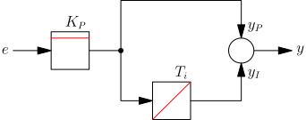
Die obige Struktur bzw. das Blockschaltbild des PI-Reglers (vgl. Abb. 5.4) ist mathematisch eine Addition und lässt sich folgendermassen formulieren:
\begin{aligned} y(t) &= y_P(t) + y_I(t) \\ &= K_P \cdot \left( e(t) + \frac{1}{T_i} \cdot \int{e(t) \, \mathrm{d}t} \right) \end{aligned}
Neben dem Proportionalbeiwert K_P (Verstärkung) wird zur Beschreibung des PI-Reglers die Nachstellzeit T_i verwendet7. Die oben gezeigte Addition von P- und I-Anteil lässt sich in der Sprungantwort des PI-Reglers sehr schön erkennen und ebenfalls ist darin die Wirkung von K_P bzw. T_i zu sehen.
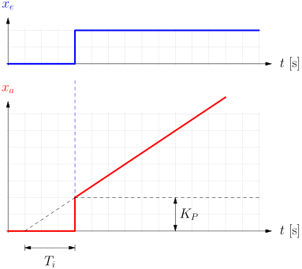
Durch diese Überlagerung von P- und I-Anteil ist der PI-Regler in der Lage die wichtigen Anforderungen Schnelligkeit (durch P-Regler) und Genauigkeit (durch I-Regler) zu erfüllen.
Damit kann im Vergleich zum (reinen) P- bzw. I-Regler ein deutlich besseres Verhalten erreicht werden. Wiederum kann mit der Erhöhung der Verstärkung ein Überschwingen und damit eine noch schnellere Regelung erzielt werden.
Der PI-Regler vereint die positiven Eigenschaften des P- und I-Reglers, d. h. ermöglicht i. Allg. eine schnelle und genaue Regelung.
In vielen Branchen (Verfahrenstechnik, Lebensmittelindustrie, Öl- und Gasindustrie, Gebäudetechnik etc.) ist der PI-Regler der Standardregler.
Störsprungantwort
Betrachten wir wieder das Störverhalten so stellen wir fest, dass nun auch die Störgrössen komplett ausgeregelt werden (analog für z_1).
Führungsrampenantwort
Um das Folgeverhalten zu beurteilen, betrachten wir abschliessend noch die Führungsrampenantwort. Wir stellen fest, dass zwar eine Regelabweichung auftritt, diese bleibt aber konstant (nicht wie beim P-Regler, wo diese immer grösser wird). Eine solche Abweichung wird als Schleppfehler bezeichnet.
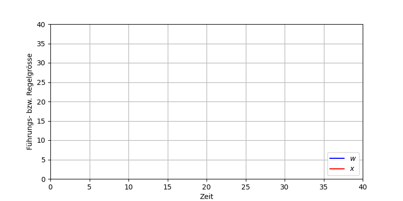
5.3.4 PID-Regler (Proportional-Integral-Differential-Regler)
Erweitert man den PI-Regler um einen weiteren parallelen Zweig mit einem D-Anteil (Differential- oder kurz D-Glied) so resultiert der äusserst populäre PID-Regler.
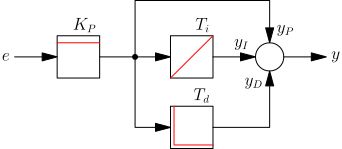
Die obige Struktur bzw. das Blockschaltbild des PID-Reglers (vgl. Abb. 5.6) lässt sich mathematisch folgendermassen formulieren:
\begin{aligned} y(t) &= y_P(t) + y_I(t) + y_D(t) \\ &= K_P \cdot \left( e(t) + \frac{1}{T_i} \cdot \int{e(t) \, \mathrm{d}t} + T_d \cdot \dot{e}(t) \right) \end{aligned}
Um die Sprungantwort des PID-Reglers zu verstehen, betrachten wir die nachfolgende Visualisierung. Die Sprungantwort des PID-Reglers lässt sich in die drei Anteile P, I und D zerlegen.
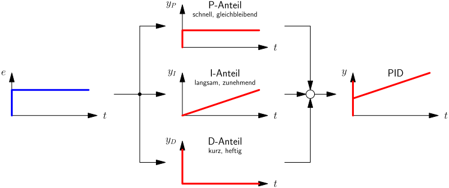
Neben dem Proportionalbeiwert K_P (Verstärkung) und der Nachstellzeit T_i (I-Anteil) kommt nun eine dritte Kenngrösse, nämlich die Vorhaltezeit T_d hinzu. Der D-Anteil lässt sich in der Sprungantwort des PID-Reglers durch einen (theoretisch unendlich hohen) Impuls erkennen.
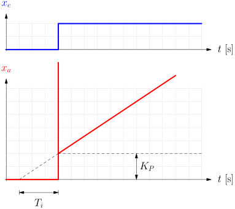
Die obige Variante des PID-Reglers ist in der Praxis nicht brauchbar/realisierbar, wir sprechen daher vom idealen PID-Regler. Dieser würde folgende Probleme mit sich bringen:
- Der ideale D-Anteil (Ableitung) würde zu sehr hohen Stellgrössen führen. In der Realität kann eine Stellgrösse nicht beliebig grosse Werte einnehmen und wäre daher rasch in der Begrenzung (Anschlag).
- Das zurückgeführte Signal stammt von einem Messglied/Sensor und ist somit immer mit Rauschen behaftet. Der ideale D-Anteil würde auch minimales Rauschen stark verstärken, was sich äusserst negativ auf das Regelverhalten auswirken würde.
In der Praxis wird der D-Anteil daher mit einer kleinen Verzögerung T_{\mathrm{Vz}} implementiert (Reihenschaltung von D- und P-T1-Glied, d. h. als D-T1-Glied) und man spricht vom realen PID-Regler bzw. dem PID-T1-Regler. Man kann sich das als Filterung vorstellen, sodass hohe Frequenzen nicht beliebig verstärkt werden.
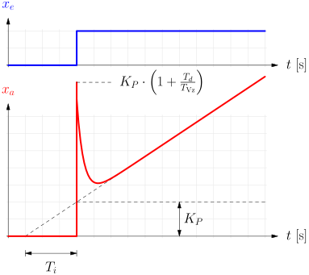
Der D-Anteil sorgt dafür, dass der Regler spezifisch auf die Änderungsgeschwindigkeit der Regeldifferenz reagieren kann. Man kann sich den D-Anteil als eine Art “Blick in die Zukunft” vorstellen, da er auf die Ableitung (Steigung) der Regeldifferenz reagiert und damit die Stellgrösse “vorausschauend” verstellt. Dadurch kann i. Allg. das Überschwingen verringert werden, d. h. die Dämpfung/Stabilität erhöht werden.
Mit dem PID-Regler haben wir einen sehr flexiblen und äusserst mächtigen Regler, der für viele Anwendungen ein sehr gutes Regelverhalten ermöglicht und trotzdem durch eine vergleichsweise einfache Struktur bzw. Parametrierung besticht. Aus diesen Gründen ist er als Standardregler allgegenwärtig in der Industrie.
Durch die Vereinigung von P-, I- und D-Anteil im Regler ist generell eine schnelle, genaue und gut gedämpfte Regelung realisierbar. Der P-Anteil reagiert auf die aktuelle Regelabweichung, der I-Anteil auf die integrierte Regelabweichung (Vergangenheit) und der D-Anteil auf die Änderung der Regelabweichung (Zukunft).
Der PID-Regler gilt als Standardregler in vielen Industriezweigen (z. B. Robotik, Automobiltechnik, Luft- und Raumfahrt etc.), in denen generell dynamische Prozesse geregelt werden müssen.
5.3.5 PD-Regler (Proportional-Differential-Regler)
Entfernt man den I-Anteil des PID-Reglers (vgl. Abb. 5.6) so resultiert der PD-Regler. Dieser kommt zum Einsatz, wenn z. B. in der Regelstrecke bereits ein I-Anteil enthalten ist und im Regler keiner mehr nötig ist.
Mathematisch lässt sich der PD-Regler folgendermassen formulieren:
\begin{aligned} y(t) &= y_P(t) + y_D(t) \\ &= K_P \cdot \left( e(t) + T_d \cdot \dot{e}(t) \right) \end{aligned}
Die Sprungantwort sollte mit dem aktuellen Wissen zu keiner Überraschung mehr führen. Nachfolgend ist die Sprungantwort des realen PD-Reglers gezeigt, d. h. mit der zusätzlichen Verzögerung T_{\mathrm{Vz}}.
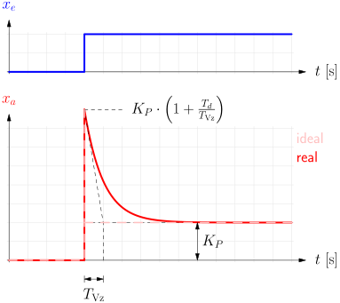
Da der PD-Regler keinen I-Anteil aufweist, würde er an der obigen P-T3-Strecke (wie der P-Regler) eine bleibende Regelabweichung produzieren. Die Dynamik könnte allerdings verbessert werden (Schnelligkeit, Dämpfung).
Um die Vorteile des PD-Reglers deutlich sichtbar zu machen, betrachten wir im Folgenden eine I-T2-Strecke, d. h. eine Strecke, die selber bereits einen I-Anteil enthält. Als Streckenparameter verwenden wir K_I = 0.2 sowie T_1 = 2\,\mathrm{s} und T_1 = 0.5\,\mathrm{s}.
Wir beginnen wieder mit dem einfachen P-Regler und werden feststellen, dass dieser an einer I-Strecke keine bleibende Regelabweichung aufweist - da in der Strecke ein I-Anteil vorhanden ist.
Wir verdoppeln die Verstärkung und beobachten wiederum, dass die Schwingneigung deutlich zunimmt. Eine weitere Erhöhung der Verstärkung des P-Reglers ist daher nicht zu empfehlen.
Verwenden wir anstelle des P-Reglers nun einen PD-Regler, so sieht die Situation deutlich anders aus. Der D-Anteil greift im entscheidenden Moment stark ein und verringert dadurch die Regelabweichung ziemlich rasch. Der P-Anteil “muss” sich dann “nur” noch über die verbleibende Regelabweichung kümmern (und ein Überreagieren bzw. Überschwingen wird dadurch reduziert). Damit ist wiederum eine höhere Verstärkung möglich.
An I-Strecken wird kein I-Anteil im Regler benötigt, um stationäre Genauigkeit zu erreichen, da bereits ein I-Anteil in der Strecke enthalten ist. Daher sind P-Regler bzw. PD-Regler für solche Strecken gut geeignet, wobei der PD-Regler vorteilhaft ist in Bezug auf die Schnelligkeit und Dämpfung.
5.3.5.1 Störgrössensprung
Um abschliessend das Störverhalten des P/PD-Reglers an einer I-Strecke zu beurteilen, prägen wir wiederum einen Störgrössensprung am Eingang z_2 (nach der Regelstrecke) auf und betrachten das Regelverhalten.
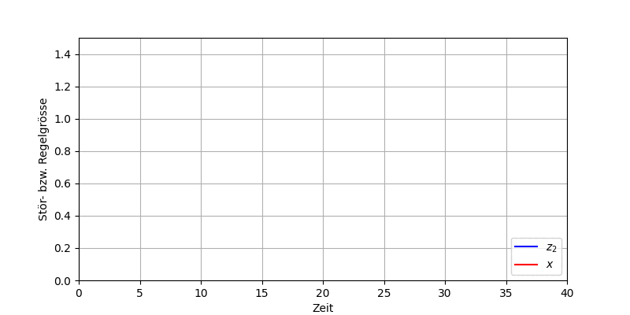
Eine Störung am Regelstreckenausgang (z_2) kann vom P/PD-Regler an einer I-Strecke komplett ausgeregelt werden (vgl. obige Abb.), eine Störung am Streckeneingang (z_1) allerdings nicht (vgl. nachfolgende Abb.), da wir zu deren Kompensation wiederum eine Stellgrösse benötigen würde bei einer Regeldifferenz von 0.
5.4 Zusammenfassung
Die folgende Tabelle fasst die Erkenntnisse in Bezug auf die bleibende Regelabweichung kompakt zusammen. Je nachdem, ob wir einen I-Anteil im Regler (1. Spalte) bzw. in der Strecke (2. Spalte) haben, ergibt sich eine bleibende Regelabweichung bei einem Führungssprung (3. Spalte) bzw. einer Führungsrampe (4. Spalte) und bei Störgrössen am Streckeneingang (5. Spalte) bzw. Streckenausgang (6. Spalte).
| Reglertyp | Streckentyp | Regeldifferenz bei Sprung w | Regeldifferenz bei Rampe w | Regeldifferenz bei Sprung z_1 | Regeldifferenz bei Sprung z_2 |
|---|---|---|---|---|---|
| P(D) | P | \dfrac{\Delta w}{1 + K_{PR} \cdot K_{PS}} | \infty | \dfrac{K_{PS} \cdot \Delta z_1}{1 + K_{PR} \cdot K_{PS}} | \dfrac{\Delta z_2}{1 + K_{PR} \cdot K_{PS}} |
| PI(D) | P | 0 | \dfrac{\Delta w}{\left(\dfrac{K_{PR}}{T_i}\right) \cdot K_{PS}} | 0 | 0 |
| P(D) | I | 0 | \dfrac{\Delta w}{K_{PR} \cdot K_{IS}} | \dfrac{\Delta z_1}{K_{PR}} | 0 |
| PI(D) | I | 0 | 0 | 0 | 0 |
Aufgaben
Um die Vertrautheit mit Boris zu üben, sollen die obigen Simulationen reproduziert werden. Spiele dabei mit den Reglerparametern und beobachte die Auswirkungen auf das Regelverhalten.
Simuliere die Führungssprungantwort eines Regelkreises mit einem PI-Regler und einer P-T2-Strecke. Die Streckenparameter sind: K_P=2.75 \quad T_1=2.4\,\mathrm{s} \quad \text{und} \quad T_2=0.8\,\mathrm{s}
Für den PI-Regler soll T_i = T_1 verwendet werden und die Verstärkung so eingestellt werden, dass ein Überschwingen von ca. 10% des Sollwertes erreicht wird. Stelle die Simulationsdauer auf 20 s ein.
Menu Messung > Aktivieren im Zeitverlaufsdiagramm ermöglicht das genaue Ablesen von Werten. Mit der Maus kann man die Messpunkte verschieben und so die Werte an der gewünschten Stelle ablesen.
Eine I-T1-Strecke mit T_I=0.5\,\mathrm{s} und T_1=0.75\,\mathrm{s} soll mit einem P-Regler geregelt werden. Zwischen dem I-Glied und dem P-T1-Glied (Reminder: Ein I-T1 ist eine Reihenschaltung von I und P-T1) greift eine Störgrösse z ein.
Stelle die Verstärkung des P-Reglers so ein, dass die Regelabweichung bei der Störsprungantwort spätestens nach 2.5 s auf +/- 0.1 abgesunken ist. Simuliere anschliessen die Führungssprungantwort und lese das Überschwingens ab (in % des Sollwertes).
Mit dem Block Verknüpfer (Palette Funktion) kann die Störgrösse z zwischen I-Glied und P-T1-Glied eingeleitet werden. Die Störgrössensprung selbst wird mit dem Funktionsgenerator erzeugt (analog zur Führungsgrösse).